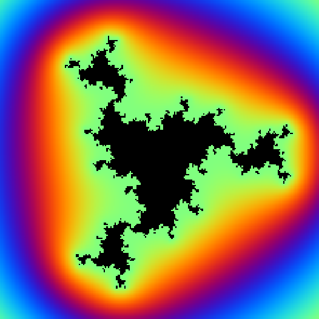

One World Fractals
Next Event: 20 September 2023

The idea to host this event was initially proposed by Thomas Jordan in May 2022. The
planning of the concept started with Antti Käenmäki and during Summer 2022 it went through a
couple of iterations. Sascha Troscheit joined the discussions and in September 2022 we
arrived at the current format and implementation. The format was influenced by
many other events and seminars that were organised during the pandemic such as the online
seminars of
St Andrews,
BudWiSer,
and Quasiworld together with
the one time event "One World
Fractal Geometry and Related Fields", which replaced the postponed
"Fractal Geometry and Related Fields IV"
conference in 2020. With the current initiative, we are happy to join
the One World umbrella.
Registration.
To receive the log in details for the online events, and to receive the seminar
announcements, please register here.
Next event: 20 September 2023.
-
Organisers
- Jonathan Fraser (St Andrews)
- Thomas Jordan (Bristol)
- Natalia Jurga (St Andrews)
- Antti Käenmäki (Oulu)
- Henna Koivusalo (Bristol)
- Sascha Troscheit (Oulu)